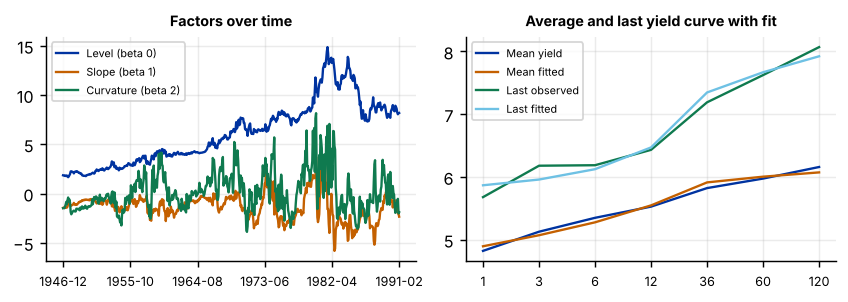

Run this model on your own data in Open Econometric Systems →
Step 1The question and the model
What is the shape of the yield curve, and how does it move? The Nelson-Siegel curve for the yield of maturity \(\tau\) is
Each factor has a meaning:
| Factor | Loading | Interpretation |
|---|---|---|
| \(\beta_0\) | 1 at all maturities | Level: the long-term yield |
| \(\beta_1\) | Decays from 1 to 0 | Slope: the short rate minus the long rate with a negative sign (a negative \(\beta_1\) is a normal, upward-sloping curve) |
| \(\beta_2\) | Hump-shaped | Curvature: the medium-term yield relative to the short and long ones |
The parameter \(\lambda\) fixes where the curvature loading peaks (at about \(1.79/\lambda\) months). With \(\lambda\) given, the factors are linear and are estimated by OLS at every date; \(\lambda\) is estimated here by minimising the squared fitting error over the whole sample. Diebold and Li (2006) model the factors as AR(1) processes and forecast the curve by forecasting the factors.
How to write it: the model
We fit the Nelson-Siegel curve to the yields of seven maturities (1, 3, 6, 12, 36, 60 and 120 months) at every month, with the decay parameter \(\lambda\) chosen to minimise the squared fitting error over the whole sample. The level, slope and curvature factors are estimated by OLS at each date. We forecast the yields 12 months ahead by AR(1) forecasts of the factors, estimated on an expanding window, and compare them with the random walk and with AR(1) forecasts of each yield, with root mean squared errors on the last 40% of the sample.
Step 2Load the data
import numpy as np
import pandas as pd
import oes_engine as oes # pip install -e open-econometric-systems/oes-engine
d = pd.read_csv("irates.csv")
cols = ["r1", "r3", "r6", "r12", "r36", "r60", "r120"]
mats = "1,3,6,12,36,60,120"
data = d[["month"] + cols].to_csv(index=False)
print(len(d), "months,", d.month.iloc[0], "to", d.month.iloc[-1])
print(d[cols].agg(["mean", "std", "min", "max"]).round(2))
print("share of months with an inverted curve (1-month yield above the 10-year):", round((d.r1 > d.r120).mean(), 3))531 months, 1946-12 to 1991-02
r1 r3 r6 r12 r36 r60 r120
mean 4.82 5.13 5.35 5.53 5.82 5.97 6.16
std 3.19 3.29 3.34 3.35 3.30 3.27 3.19
min 0.25 0.47 0.57 0.72 1.10 1.35 1.80
max 16.21 16.00 16.51 16.34 15.82 15.70 15.06
share of months with an inverted curve (1-month yield above the 10-year): 0.09How to read it
The sample has 531 months from December 1946 to February 1991. Yields average 4.8% at 1 month and 6.2% at 10 years, an upward-sloping curve on average, with a standard deviation of about 3.2 points at every maturity: the level of rates moves much more than the slope. The 1-month yield was above the 10-year yield in 9% of months (mostly in 1973 to 1974, 1979 to 1981 and 1989).
Step 3Fit the curve
spec = dict(yields=cols, maturities=mats, time="month")
r = oes.run("nelson_siegel", data, spec)
oes.summary(r)
oes.show(r, "Fit by maturity")
oes.plot(r)Dates: 531
Maturities: 7
lambda: 0.1384
Mean RMSE of the fit: 0.1079
Fit by maturity
Mean yield RMSE of the fit Mean error
Maturity (months)
1.0 4.8202 0.1193 -0.0735
3.0 5.1258 0.1257 0.0561
6.0 5.3473 0.1014 0.0719
12.0 5.5258 0.0743 -0.0196
36.0 5.8213 0.1283 -0.0907
60.0 5.9730 0.0752 -0.0301
120.0 6.1575 0.1312 0.0859
Note: Errors in the same units as the yields (percentage points if the yields are in percent).
How to read it
The decay parameter that minimises the fitting error is \(\lambda = 0.138\) per month, which puts the peak of the curvature loading at about 13 months (Diebold and Li (2006) fix 0.0609, a peak at 30 months, for monthly data). The mean root mean squared error of the fit across the seven maturities is 0.108 percentage points, ranging from 0.074 at 12 months to 0.131 at 10 years. Three factors reproduce yields of seven maturities to within about a tenth of a percentage point; the mean errors by maturity are within 0.09. The chart shows the average and the last yield curve with the fitted curve.
Step 4The factors over time
oes.show(r, "Factors")Factors (estimated date by date)
Mean S.d. Min Max Autocorrelation lag 1 lag 12 lag 24
Factor
Level (beta 0) 6.1399 3.1905 1.6600 14.8576 0.9957 0.9481 0.8959
Slope (beta 1) -1.3489 1.3109 -5.8165 3.7202 0.9012 0.3459 0.0260
Curvature (beta 2) 0.2126 2.0189 -3.8868 8.1541 0.7995 0.4153 0.1218
Note: lambda = 0.1384 per month: the curvature loading peaks at about 13 months.How to read it
The level factor has a mean of 6.14 and ranges from 1.66 to 14.86 with a first-order autocorrelation of 0.996 and 0.90 after 24 months: a very persistent factor that tracks the rise of the 1960s and 1970s and peaks in 1981 (the 10-year yield peaked in September 1981). The slope factor has a mean of \(-1.35\) (an upward-sloping curve), ranges from \(-5.8\) to 3.7 (a positive value is an inverted curve) and is much less persistent: 0.90 at one month, 0.35 after 12 months and 0.03 after 24. The curvature factor has a mean of 0.21, a standard deviation of 2.0 and autocorrelations of 0.80, 0.42 and 0.12. The persistence of the level and the transitory nature of the slope are the standard features that Diebold and Li found for later data.
Step 5Forecast the curve
oes.show(r, "12-month-ahead")12-month-ahead forecast RMSE (out of sample, 201 forecasts)
1-month yield 12-month yield 120-month yield
Forecast
Random walk 2.3950 2.1590 1.5360
AR(1) factors 2.6820 2.4736 1.7391
AR(1) on the yield 2.4329 2.2121 1.6375
Note: Expanding-window estimation; the factors are re-estimated at every date with lambda fixed.How to read it
Twelve months ahead, the random walk is the best forecast at every maturity: root mean squared errors of 2.40, 2.16 and 1.54 for the 1-month, 12-month and 10-year yields, against 2.68, 2.47 and 1.74 for AR(1) forecasts of the factors and 2.43, 2.21 and 1.64 for AR(1) forecasts of the yields. This differs from Diebold and Li, who found that AR(1) factors beat the random walk at the 12-month horizon on 1985 to 2000 data. In this sample, which includes the 1979 to 1982 shift in monetary policy, the factor AR(1) cannot predict the large changes in the level, and its slow mean reversion pulls the forecast towards a mean that the 1960s and 1970s had left behind. The result is a caution: a good in-sample fit says nothing about forecasting.
Step 6Robustness: the decay parameter and the horizon
for lam in (0.0609, 0.3):
rl = oes.run("nelson_siegel", data, dict(spec, **{"lambda": lam}))
print(f"--- lambda = {lam}: mean RMSE of the fit {rl['summary'][3]['value']}")
print([ (row[0], round(row[1], 3)) for row in rl["tables"][2]["rows"] ])
r6 = oes.run("nelson_siegel", data, dict(spec, horizon=6))
oes.show(r6, "6-month-ahead")
r24 = oes.run("nelson_siegel", data, dict(spec, horizon=24))
oes.show(r24, "24-month-ahead")--- lambda = 0.0609: mean RMSE of the fit 0.1309
[('Random walk', 2.395), ('AR(1) factors', 2.547), ('AR(1) on the yield', 2.433)]
--- lambda = 0.3: mean RMSE of the fit 0.1247
[('Random walk', 2.395), ('AR(1) factors', 2.724), ('AR(1) on the yield', 2.433)]
6-month-ahead forecast RMSE (out of sample, 207 forecasts)
1-month yield 12-month yield 120-month yield
Forecast
Random walk 1.9218 1.7015 1.0289
AR(1) factors 2.0045 1.7811 1.1183
AR(1) on the yield 1.9591 1.7416 1.0594
Note: Expanding-window estimation; the factors are re-estimated at every date with lambda fixed.
24-month-ahead forecast RMSE (out of sample, 189 forecasts)
1-month yield 12-month yield 120-month yield
Forecast
Random walk 3.2616 3.0674 2.2292
AR(1) factors 3.7584 3.5486 2.6556
AR(1) on the yield 3.3139 3.1503 2.5365
Note: Expanding-window estimation; the factors are re-estimated at every date with lambda fixed.How to read it
With \(\lambda = 0.0609\) the mean fitting error rises to 0.131 and the factor forecast of the 1-month yield becomes 2.55 (still worse than 2.40 for the random walk). With \(\lambda = 0.3\) the fit is 0.125 and the forecast is 2.72. The conclusion does not depend on \(\lambda\). At six months the random walk is also best (1.92, 1.70, 1.03 against 2.00, 1.78, 1.12 for the factors); at 24 months its lead grows (3.26, 3.07, 2.23 against 3.76, 3.55, 2.66). In this sample the random walk is the benchmark to beat at all three horizons.
Step 7Diagnostics: does the fit recover a known curve?
import oes_engine.finance as fin
tau = np.array([3, 6, 12, 24, 36, 60, 84, 120.0]); lam = 0.0609
rng = np.random.default_rng(0)
B = np.column_stack([5 + np.cumsum(rng.normal(0, .05, 200)), -1 + np.cumsum(rng.normal(0, .05, 200)), np.cumsum(rng.normal(0, .05, 200))])
Y = B @ fin._ns_loadings(tau, lam).T
for noise in (0.0, 0.05):
sim = pd.DataFrame(Y + rng.normal(0, noise, Y.shape), columns=[f"y{int(t)}" for t in tau]); sim["t"] = range(200)
rs = oes.run("nelson_siegel", sim.to_csv(index=False), dict(yields=list(sim.columns[:-1]), maturities=",".join(str(int(t)) for t in tau), time="t"))
print(f"noise s.d. {noise}: estimated lambda {rs['summary'][2]['value']} (true {lam}); mean RMSE {rs['summary'][3]['value']}; factor means:", [row[1] for row in rs["tables"][0]["rows"]], " true:", B.mean(0).round(3).tolist())noise s.d. 0.0: estimated lambda 0.0609 (true 0.0609); mean RMSE 0.0; factor means: [5.242107, -1.519446, 0.249131] true: [5.242, -1.519, 0.249] noise s.d. 0.05: estimated lambda 0.0597 (true 0.0609); mean RMSE 0.0389; factor means: [5.232721, -1.511909, 0.304108] true: [5.242, -1.519, 0.249]
How to read it
Fitting a known curve with the three factors and \(\lambda = 0.0609\) on 200 dates and eight maturities returns \(\lambda = 0.0609\) exactly and the factor means to three decimals (5.242, \(-1.519\) and 0.249) when there is no noise. With noise of 0.05 percentage points on each yield, the estimated \(\lambda\) is 0.0597, the mean fitting error is 0.039 and the factor means are 5.233, \(-1.512\) and 0.304: the level and slope are recovered, and the curvature is the factor that is hardest to pin down. The test suite also checks the factors against scipy least squares at a fixed \(\lambda\).
Step 8Write the results
How to write it: results
We fit the Nelson-Siegel curve to the monthly yields of seven maturities, 1 to 120 months, December 1946 to February 1991 (531 months). The decay parameter, estimated by minimising the squared fitting error, is 0.138 per month; the mean root mean squared error of the fit is 0.108 percentage points. The level factor is very persistent (autocorrelation 0.996) and ranges from 1.7 to 14.9; the slope factor averages \(-1.35\) (upward-sloping curve) and is transitory (autocorrelation 0.35 after 12 months). The AR(1) forecasts of the factors do not beat the random walk at a 12-month horizon (root mean squared errors of 2.68, 2.47 and 1.74 against 2.40, 2.16 and 1.54 for the 1-month, 12-month and 10-year yields), and the result is the same for \(\lambda = 0.0609\) and \(\lambda = 0.3\) and for horizons of 6 and 24 months. In simulation the fit recovers a known curve and its decay parameter.
References. Nelson and Siegel (1987), Journal of Business; Diebold and Li (2006), Journal of Econometrics; Svensson (1994), NBER Working Paper 4871; Litterman and Scheinkman (1991), Journal of Fixed Income; Diebold, Rudebusch and Aruoba (2006), Journal of Econometrics; McCulloch and Kwon (1993), Ohio State University Working Paper 93-6.